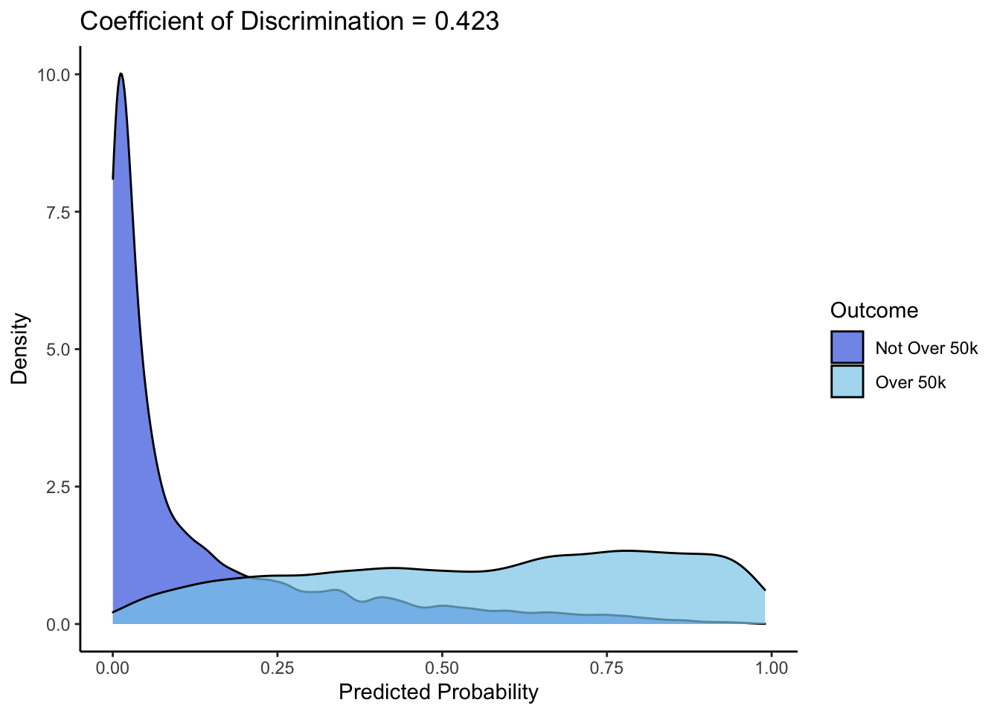
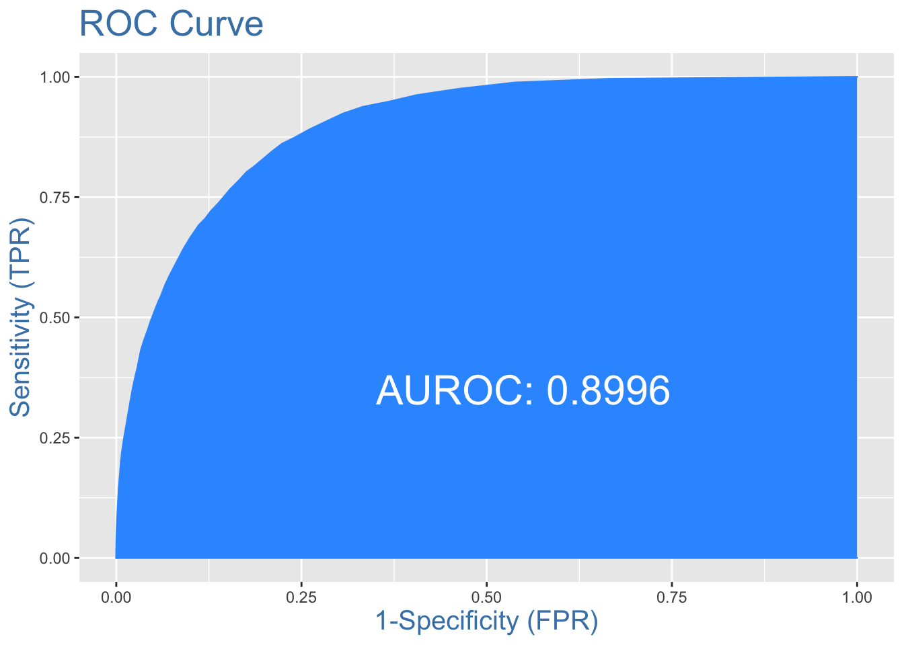

Chapter 3 Develop Logistic Regression Model
3.1 Check for issues with multi-collinearity
3.2 Variable Selection
# Stepwise selection to select relevant variables
full.model <- glm(over_50k ~ ., data=train[,2:13], family = binomial(link = "logit"))
empty.model <- glm(over_50k ~ 1, data=train[,2:13], family = binomial(link = "logit"))
step.model <- step(empty.model,
scope = list(lower=formula(empty.model),
upper=formula(full.model)),
direction = "both")## Start: AIC=37650.61
## over_50k ~ 1
##
## Df Deviance AIC
## + marital_status 6 30123 30137
## + occupation 12 33239 33265
## + education_level 14 33242 33272
## + age_bin 3 33943 33951
## + hours_week_bin 2 35187 35193
## + capital_gain_indicator 1 35592 35596
## + sex 1 35847 35851
## + workclass 6 36598 36612
## + capital_loss_indicator 1 37114 37118
## + race 4 37242 37252
## + country_bin 1 37611 37615
## <none> 37649 37651
##
## Step: AIC=30137.35
## over_50k ~ marital_status
##
## Df Deviance AIC
## + education_level 14 26029 26071
## + occupation 12 26650 26688
## + capital_gain_indicator 1 28635 28651
## + age_bin 3 28895 28915
## + hours_week_bin 2 29023 29041
## + workclass 6 29552 29578
## + capital_loss_indicator 1 29763 29779
## + race 4 29997 30019
## + sex 1 30063 30079
## + country_bin 1 30064 30080
## <none> 30123 30137
## - marital_status 6 37649 37651
##
## Step: AIC=26070.84
## over_50k ~ marital_status + education_level
##
## Df Deviance AIC
## + capital_gain_indicator 1 24929 24973
## + occupation 12 25004 25070
## + age_bin 3 25173 25221
## + hours_week_bin 2 25344 25390
## + workclass 6 25688 25742
## + capital_loss_indicator 1 25811 25855
## + sex 1 25957 26001
## + race 4 25976 26026
## + country_bin 1 25989 26033
## <none> 26029 26071
## - education_level 14 30123 30137
## - marital_status 6 33242 33272
##
## Step: AIC=24973.02
## over_50k ~ marital_status + education_level + capital_gain_indicator
##
## Df Deviance AIC
## + occupation 12 23953 24021
## + age_bin 3 24122 24172
## + hours_week_bin 2 24278 24326
## + capital_loss_indicator 1 24608 24654
## + workclass 6 24613 24669
## + sex 1 24863 24909
## + race 4 24883 24935
## + country_bin 1 24897 24943
## <none> 24929 24973
## - capital_gain_indicator 1 26029 26071
## - education_level 14 28635 28651
## - marital_status 6 31729 31761
##
## Step: AIC=24021.46
## over_50k ~ marital_status + education_level + capital_gain_indicator +
## occupation
##
## Df Deviance AIC
## + age_bin 3 23249 23323
## + hours_week_bin 2 23495 23567
## + capital_loss_indicator 1 23663 23733
## + workclass 6 23805 23885
## + sex 1 23900 23970
## + race 4 23922 23998
## + country_bin 1 23937 24007
## <none> 23954 24022
## - occupation 12 24929 24973
## - capital_gain_indicator 1 25004 25070
## - education_level 14 25443 25483
## - marital_status 6 30007 30063
##
## Step: AIC=23322.61
## over_50k ~ marital_status + education_level + capital_gain_indicator +
## occupation + age_bin
##
## Df Deviance AIC
## + hours_week_bin 2 22840 22918
## + capital_loss_indicator 1 22979 23055
## + workclass 6 23104 23190
## + sex 1 23213 23289
## + race 4 23216 23298
## + country_bin 1 23235 23311
## <none> 23249 23323
## - age_bin 3 23954 24022
## - occupation 12 24122 24172
## - capital_gain_indicator 1 24252 24324
## - education_level 14 24598 24644
## - marital_status 6 27783 27845
##
## Step: AIC=22917.82
## over_50k ~ marital_status + education_level + capital_gain_indicator +
## occupation + age_bin + hours_week_bin
##
## Df Deviance AIC
## + capital_loss_indicator 1 22583 22663
## + workclass 6 22727 22817
## + race 4 22816 22902
## + country_bin 1 22830 22910
## + sex 1 22834 22914
## <none> 22840 22918
## - hours_week_bin 2 23249 23323
## - age_bin 3 23495 23567
## - occupation 12 23565 23619
## - capital_gain_indicator 1 23815 23891
## - education_level 14 24083 24133
## - marital_status 6 27116 27182
##
## Step: AIC=22663.35
## over_50k ~ marital_status + education_level + capital_gain_indicator +
## occupation + age_bin + hours_week_bin + capital_loss_indicator
##
## Df Deviance AIC
## + workclass 6 22476 22568
## + race 4 22560 22648
## + country_bin 1 22575 22657
## + sex 1 22578 22660
## <none> 22583 22663
## - capital_loss_indicator 1 22840 22918
## - hours_week_bin 2 22979 23055
## - age_bin 3 23218 23292
## - occupation 12 23286 23342
## - capital_gain_indicator 1 23646 23724
## - education_level 14 23770 23822
## - marital_status 6 26803 26871
##
## Step: AIC=22567.76
## over_50k ~ marital_status + education_level + capital_gain_indicator +
## occupation + age_bin + hours_week_bin + capital_loss_indicator +
## workclass
##
## Df Deviance AIC
## + race 4 22451 22551
## + country_bin 1 22466 22560
## + sex 1 22472 22566
## <none> 22476 22568
## - workclass 6 22583 22663
## - capital_loss_indicator 1 22727 22817
## - hours_week_bin 2 22842 22930
## - occupation 12 23100 23168
## - age_bin 3 23109 23195
## - capital_gain_indicator 1 23520 23610
## - education_level 14 23669 23733
## - marital_status 6 26680 26760
##
## Step: AIC=22551.26
## over_50k ~ marital_status + education_level + capital_gain_indicator +
## occupation + age_bin + hours_week_bin + capital_loss_indicator +
## workclass + race
##
## Df Deviance AIC
## + country_bin 1 22444 22546
## + sex 1 22448 22550
## <none> 22451 22551
## - race 4 22476 22568
## - workclass 6 22560 22648
## - capital_loss_indicator 1 22703 22801
## - hours_week_bin 2 22808 22904
## - occupation 12 23066 23142
## - age_bin 3 23083 23177
## - capital_gain_indicator 1 23495 23593
## - education_level 14 23627 23699
## - marital_status 6 26570 26658
##
## Step: AIC=22545.75
## over_50k ~ marital_status + education_level + capital_gain_indicator +
## occupation + age_bin + hours_week_bin + capital_loss_indicator +
## workclass + race + country_bin
##
## Df Deviance AIC
## + sex 1 22440 22544
## <none> 22444 22546
## - country_bin 1 22451 22551
## - race 4 22466 22560
## - workclass 6 22553 22643
## - capital_loss_indicator 1 22694 22794
## - hours_week_bin 2 22798 22896
## - occupation 12 23052 23130
## - age_bin 3 23075 23171
## - capital_gain_indicator 1 23486 23586
## - education_level 14 23609 23683
## - marital_status 6 26567 26657
##
## Step: AIC=22544.51
## over_50k ~ marital_status + education_level + capital_gain_indicator +
## occupation + age_bin + hours_week_bin + capital_loss_indicator +
## workclass + race + country_bin + sex
##
## Df Deviance AIC
## <none> 22440 22544
## - sex 1 22444 22546
## - country_bin 1 22448 22550
## - race 4 22462 22558
## - workclass 6 22548 22640
## - capital_loss_indicator 1 22691 22793
## - hours_week_bin 2 22773 22873
## - occupation 12 23051 23131
## - age_bin 3 23066 23164
## - capital_gain_indicator 1 23482 23584
## - education_level 14 23597 23673
## - marital_status 6 25801 25893# Forward selection to select two-variable interactions
# First: double check interactions for quasi complete separation
table(train$over_50k, train$hours_week_bin, train$occupation)## , , = ?
##
##
## 0 1 2
## 0 961 644 172
## 1 79 64 49
##
## , , = Adm-clerical
##
##
## 0 1 2
## 0 1030 1936 411
## 1 93 303 140
##
## , , = Craft-repair
##
##
## 0 1 2
## 0 436 1955 907
## 1 39 534 398
##
## , , = Exec-managerial
##
##
## 0 1 2
## 0 345 1021 852
## 1 116 695 1238
##
## , , = Farming-fishing
##
##
## 0 1 2
## 0 201 305 424
## 1 7 27 91
##
## , , = Handlers-cleaners
##
##
## 0 1 2
## 0 493 834 233
## 1 7 62 27
##
## , , = Machine-op-inspct
##
##
## 0 1 2
## 0 220 1276 347
## 1 6 171 91
##
## , , = Other-service
##
##
## 0 1 2
## 0 1612 1284 400
## 1 31 52 45
##
## , , = Prof-specialty
##
##
## 0 1 2
## 0 622 1017 734
## 1 238 751 965
##
## , , = Protective-serv
##
##
## 0 1 2
## 0 89 279 113
## 1 10 116 92
##
## , , = Sales
##
##
## 0 1 2
## 0 1008 936 883
## 1 83 338 590
##
## , , = Tech-support
##
##
## 0 1 2
## 0 171 398 135
## 1 44 163 90
##
## , , = Transport-moving
##
##
## 0 1 2
## 0 206 649 459
## 1 19 116 211table(train$over_50k, train$race, train$country_bin) # Quasi complete separation!!## , , = 0
##
##
## Amer-Indian-Eskimo Asian-Pac-Islander Black Other White
## 0 11 553 263 135 1848
## 1 1 215 38 16 427
##
## , , = 1
##
##
## Amer-Indian-Eskimo Asian-Pac-Islander Black Other White
## 0 284 219 2616 117 19952
## 1 32 81 358 16 7007table(train$over_50k, train$sex, train$capital_gain_indicator)## , , = 0
##
##
## Female Male
## 0 9799 15126
## 1 930 5507
##
## , , = 1
##
##
## Female Male
## 0 354 719
## 1 295 1459# Build main model with stepwise selected variables
main.model <- glm(over_50k ~ marital_status + education_level + capital_gain_indicator + occupation + hours_week_bin + age_bin + capital_loss_indicator + workclass + country_bin + race,
data = train, family = binomial(link = "logit"))
# Build model with interactions of interest
int.model <- glm(over_50k ~ marital_status + education_level + capital_gain_indicator + occupation + hours_week_bin + age_bin + capital_loss_indicator + workclass + country_bin + race + hours_week_bin*occupation + sex*capital_gain_indicator, data = train, family = binomial(link = "logit"))
# Forward selection
for.model <- step(main.model,
scope = list(lower=formula(main.model),
upper=formula(int.model)),
direction = "forward")## Start: AIC=22545.75
## over_50k ~ marital_status + education_level + capital_gain_indicator +
## occupation + hours_week_bin + age_bin + capital_loss_indicator +
## workclass + country_bin + race
##
## Df Deviance AIC
## + sex 1 22440 22544
## + occupation:hours_week_bin 24 22395 22545
## <none> 22444 22546
##
## Step: AIC=22544.51
## over_50k ~ marital_status + education_level + capital_gain_indicator +
## occupation + hours_week_bin + age_bin + capital_loss_indicator +
## workclass + country_bin + race + sex
##
## Df Deviance AIC
## + capital_gain_indicator:sex 1 22435 22541
## + occupation:hours_week_bin 24 22391 22543
## <none> 22440 22544
##
## Step: AIC=22540.59
## over_50k ~ marital_status + education_level + capital_gain_indicator +
## occupation + hours_week_bin + age_bin + capital_loss_indicator +
## workclass + country_bin + race + sex + capital_gain_indicator:sex
##
## Df Deviance AIC
## + occupation:hours_week_bin 24 22385 22539
## <none> 22435 22541
##
## Step: AIC=22538.99
## over_50k ~ marital_status + education_level + capital_gain_indicator +
## occupation + hours_week_bin + age_bin + capital_loss_indicator +
## workclass + country_bin + race + sex + capital_gain_indicator:sex +
## occupation:hours_week_bin# Final model:
# over_50k ~ marital_status + education_level + capital_gain_indicator +
# occupation + hours_week_bin + age_bin + capital_loss_indicator +
# workclass + country_bin + race + occupation*hours_week_bin3.3 Create Logistic Regression
# GLM with binomial logit link
logit.model <- glm(over_50k ~ marital_status + education_level + capital_gain_indicator + occupation + hours_week_bin + age_bin + capital_loss_indicator + workclass + country_bin + race +
occupation*hours_week_bin, data = train, family = binomial(link = "logit"))
summary(logit.model)##
## Call:
## glm(formula = over_50k ~ marital_status + education_level + capital_gain_indicator +
## occupation + hours_week_bin + age_bin + capital_loss_indicator +
## workclass + country_bin + race + occupation * hours_week_bin,
## family = binomial(link = "logit"), data = train)
##
## Deviance Residuals:
## Min 1Q Median 3Q Max
## -2.8349 -0.5040 -0.2002 -0.0493 3.7154
##
## Coefficients:
## Estimate Std. Error z value Pr(>|z|)
## (Intercept) -5.576331 1.145227 -4.869 1.12e-06 ***
## marital_statusMarried-AF-spouse 2.426322 0.489187 4.960 7.05e-07 ***
## marital_statusMarried-civ-spouse 2.287729 0.059569 38.405 < 2e-16 ***
## marital_statusMarried-spouse-absent 0.410925 0.193671 2.122 0.033857 *
## marital_statusNever-married -0.176661 0.076413 -2.312 0.020783 *
## marital_statusSeparated -0.178487 0.155304 -1.149 0.250442
## marital_statusWidowed 0.104570 0.145654 0.718 0.472799
## education_level11th 0.137011 0.206813 0.662 0.507661
## education_level12th 0.317898 0.265998 1.195 0.232042
## education_level5th-6th -0.304368 0.300869 -1.012 0.311716
## education_level7th-8th -0.316740 0.223075 -1.420 0.155642
## education_level9th -0.243435 0.255358 -0.953 0.340434
## education_levelAssoc-acdm 1.436238 0.173478 8.279 < 2e-16 ***
## education_levelAssoc-voc 1.273443 0.167125 7.620 2.54e-14 ***
## education_levelBachelors 1.993178 0.155653 12.805 < 2e-16 ***
## education_levelDoctorate 2.843156 0.203915 13.943 < 2e-16 ***
## education_levelEarly-Ed -1.161459 0.542144 -2.142 0.032166 *
## education_levelHS-grad 0.873802 0.151949 5.751 8.89e-09 ***
## education_levelMasters 2.301095 0.164848 13.959 < 2e-16 ***
## education_levelProf-school 3.019939 0.196864 15.340 < 2e-16 ***
## education_levelSome-college 1.205330 0.154143 7.820 5.30e-15 ***
## capital_gain_indicator 1.703117 0.054450 31.279 < 2e-16 ***
## occupationAdm-clerical -0.488649 1.109744 -0.440 0.659701
## occupationCraft-repair -1.067688 1.122078 -0.952 0.341337
## occupationExec-managerial -0.214378 1.114547 -0.192 0.847472
## occupationFarming-fishing -2.015220 1.184885 -1.701 0.088986 .
## occupationHandlers-cleaners -2.118558 1.183973 -1.789 0.073556 .
## occupationMachine-op-inspct -1.691791 1.183805 -1.429 0.152972
## occupationOther-service -1.571402 1.123344 -1.399 0.161855
## occupationProf-specialty -0.199504 1.111111 -0.180 0.857503
## occupationProtective-serv -0.882822 1.171197 -0.754 0.450983
## occupationSales -0.577339 1.114981 -0.518 0.604597
## occupationTech-support 0.153923 1.126919 0.137 0.891357
## occupationTransport-moving -0.928624 1.137952 -0.816 0.414472
## hours_week_bin1 0.547044 0.208763 2.620 0.008783 **
## hours_week_bin2 1.248926 0.252918 4.938 7.89e-07 ***
## age_bin1 1.049047 0.059513 17.627 < 2e-16 ***
## age_bin2 1.462869 0.061527 23.776 < 2e-16 ***
## age_bin3 1.190935 0.071894 16.565 < 2e-16 ***
## capital_loss_indicator 1.093910 0.069380 15.767 < 2e-16 ***
## workclassLocal-gov -0.629201 0.105795 -5.947 2.72e-09 ***
## workclassPrivate -0.402754 0.088149 -4.569 4.90e-06 ***
## workclassSelf-emp-inc -0.110969 0.117230 -0.947 0.343844
## workclassSelf-emp-not-inc -0.775409 0.104261 -7.437 1.03e-13 ***
## workclassState-gov -0.748927 0.118027 -6.345 2.22e-10 ***
## workclassUnknown -1.684980 1.101090 -1.530 0.125947
## country_bin 0.184352 0.067740 2.721 0.006499 **
## raceAsian-Pac-Islander 0.685241 0.243118 2.819 0.004824 **
## raceBlack 0.514510 0.228714 2.250 0.024475 *
## raceOther 0.559238 0.324170 1.725 0.084502 .
## raceWhite 0.725147 0.219302 3.307 0.000944 ***
## occupationAdm-clerical:hours_week_bin1 -0.349248 0.255052 -1.369 0.170899
## occupationCraft-repair:hours_week_bin1 0.379191 0.284770 1.332 0.183002
## occupationExec-managerial:hours_week_bin1 0.150745 0.255625 0.590 0.555383
## occupationFarming-fishing:hours_week_bin1 0.482599 0.527926 0.914 0.360643
## occupationHandlers-cleaners:hours_week_bin1 0.631767 0.491827 1.285 0.198956
## occupationMachine-op-inspct:hours_week_bin1 0.568078 0.492663 1.153 0.248879
## occupationOther-service:hours_week_bin1 -0.311677 0.322716 -0.966 0.334147
## occupationProf-specialty:hours_week_bin1 0.087321 0.239260 0.365 0.715139
## occupationProtective-serv:hours_week_bin1 0.703722 0.455836 1.544 0.122636
## occupationSales:hours_week_bin1 0.121127 0.261702 0.463 0.643478
## occupationTech-support:hours_week_bin1 -0.369701 0.319599 -1.157 0.247368
## occupationTransport-moving:hours_week_bin1 -0.112491 0.355171 -0.317 0.751454
## occupationAdm-clerical:hours_week_bin2 -0.466743 0.308726 -1.512 0.130576
## occupationCraft-repair:hours_week_bin2 -0.007288 0.321163 -0.023 0.981895
## occupationExec-managerial:hours_week_bin2 -0.011417 0.291149 -0.039 0.968721
## occupationFarming-fishing:hours_week_bin2 0.112059 0.513438 0.218 0.827232
## occupationHandlers-cleaners:hours_week_bin2 0.268138 0.543295 0.494 0.621631
## occupationMachine-op-inspct:hours_week_bin2 0.326669 0.522225 0.626 0.531621
## occupationOther-service:hours_week_bin2 -0.128674 0.365494 -0.352 0.724797
## occupationProf-specialty:hours_week_bin2 -0.444277 0.278970 -1.593 0.111258
## occupationProtective-serv:hours_week_bin2 0.458701 0.490308 0.936 0.349512
## occupationSales:hours_week_bin2 -0.286703 0.294634 -0.973 0.330513
## occupationTech-support:hours_week_bin2 -0.612663 0.371055 -1.651 0.098710 .
## occupationTransport-moving:hours_week_bin2 0.031612 0.378371 0.084 0.933417
## ---
## Signif. codes: 0 '***' 0.001 '**' 0.01 '*' 0.05 '.' 0.1 ' ' 1
##
## (Dispersion parameter for binomial family taken to be 1)
##
## Null deviance: 37649 on 34188 degrees of freedom
## Residual deviance: 22395 on 34114 degrees of freedom
## AIC: 22545
##
## Number of Fisher Scoring iterations: 73.4 Evaluate logistic regression
View Coefficient of Discrimination (R2)
# Get coefficient of discrimination (R2)
train$p_hat = predict(logit.model, type = 'response')
p1 = train$p_hat[train$over_50k == 1]
p0 = train$p_hat[train$over_50k == 0]
coef_discrim = mean(p1) - mean(p0)
print(coef_discrim)## [1] 0.4279329# Coeff of discrimination = 0.422
# Get proportions of non-buy and buy
prop0 = 26037/34189
prop1 = 8152/34189
# Plot probabilities as density plot
ggplot(train, aes(p_hat, fill = over_50k)) +
geom_density(alpha = 0.7) +
labs(x = "Predicted Probability",
y = "Density",
fill = "Outcome",
title = paste("Coefficient of Discrimination = ",
round(coef_discrim, 3), sep = ""))+
scale_fill_manual( values = c("royalblue","skyblue"), labels=c("Not Over 50k", "Over 50k"))+
theme_classic()
Determine optimal cut-off
# Iterate through cut-off values to determine optimal cut-off
train$p_hat <- predict(logit.model, type = "response")
youden <- NULL
cutoff <- NULL
for(i in 1:49){
cutoff = c(cutoff, i/50)
youden <- c(youden, youdensIndex(train$over_50k, train$p_hat, threshold = i/50))
}
# Print table with lowest Youdens at the top of the list
ctable <- data.frame(cutoff, youden)
print(ctable[order(-youden),])## cutoff youden
## 12 0.24 0.642192079
## 11 0.22 0.641750839
## 10 0.20 0.638322751
## 9 0.18 0.636553746
## 13 0.26 0.635833378
## 8 0.16 0.631240846
## 14 0.28 0.628063085
## 15 0.30 0.623418634
## 7 0.14 0.619972692
## 16 0.32 0.619408056
## 17 0.34 0.610475502
## 6 0.12 0.607871652
## 18 0.36 0.599868900
## 19 0.38 0.590133700
## 5 0.10 0.584885158
## 20 0.40 0.583246611
## 21 0.42 0.568352008
## 4 0.08 0.560612633
## 22 0.44 0.554271903
## 23 0.46 0.541258844
## 24 0.48 0.529804439
## 3 0.06 0.522354048
## 25 0.50 0.518221258
## 26 0.52 0.504813542
## 27 0.54 0.491698473
## 28 0.56 0.479986567
## 29 0.58 0.466757790
## 2 0.04 0.454656791
## 30 0.60 0.449933373
## 31 0.62 0.438300082
## 32 0.64 0.417604032
## 33 0.66 0.400863236
## 34 0.68 0.378422900
## 35 0.70 0.358823982
## 1 0.02 0.339623018
## 36 0.72 0.336704746
## 37 0.74 0.320134563
## 38 0.76 0.292849283
## 39 0.78 0.271079599
## 40 0.80 0.237445887
## 41 0.82 0.216821812
## 42 0.84 0.193043596
## 43 0.86 0.164350199
## 44 0.88 0.140302731
## 45 0.90 0.117638351
## 46 0.92 0.092358334
## 47 0.94 0.065594905
## 48 0.96 0.035745887
## 49 0.98 0.005821626# Confusion matrix for train using Youden's Index optimal cut off
train$classification = ifelse(train$p_hat >= 0.2, 1, 0)
confusionMatrix(train$over_50k, factor(train$classification))## Confusion Matrix and Statistics
##
## Reference
## Prediction 0 1
## 0 19804 6194
## 1 1011 7180
##
## Accuracy : 0.7893
## 95% CI : (0.7849, 0.7936)
## No Information Rate : 0.6088
## P-Value [Acc > NIR] : < 2.2e-16
##
## Kappa : 0.5246
##
## Mcnemar's Test P-Value : < 2.2e-16
##
## Sensitivity : 0.9514
## Specificity : 0.5369
## Pos Pred Value : 0.7618
## Neg Pred Value : 0.8766
## Prevalence : 0.6088
## Detection Rate : 0.5793
## Detection Prevalence : 0.7604
## Balanced Accuracy : 0.7441
##
## 'Positive' Class : 0
## AUROC
# Evaluate model using AUROC
train$p_hat <- predict(logit.model, type = "response")
plotROC(train$over_50k, train$p_hat) # 0.902 AUROC
3.5 Test training cut off on validation
# Make predictions on validation set
validation$p_hat = predict(logit.model, newdata = validation, type = 'response')
# Confusion Matrix using Youdens cutoff
validation$classification = ifelse(validation$p_hat >= 0.2, 1, 0)
confusionMatrix(validation$over_50k, factor(validation$classification))## Confusion Matrix and Statistics
##
## Reference
## Prediction 0 1
## 0 2794 880
## 1 165 1045
##
## Accuracy : 0.786
## 95% CI : (0.7743, 0.7975)
## No Information Rate : 0.6059
## P-Value [Acc > NIR] : < 2.2e-16
##
## Kappa : 0.5209
##
## Mcnemar's Test P-Value : < 2.2e-16
##
## Sensitivity : 0.9442
## Specificity : 0.5429
## Pos Pred Value : 0.7605
## Neg Pred Value : 0.8636
## Prevalence : 0.6059
## Detection Rate : 0.5721
## Detection Prevalence : 0.7523
## Balanced Accuracy : 0.7435
##
## 'Positive' Class : 0
## # Get concordance
Concordance(validation$over_50k, validation$p_hat)## $Concordance
## [1] 0.9007185
##
## $Discordance
## [1] 0.09928153
##
## $Tied
## [1] 0
##
## $Pairs
## [1] 4445540# Evaluate model using AUROC
plotROC(validation$over_50k, validation$p_hat) # 0.899 AUROC